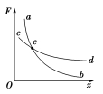
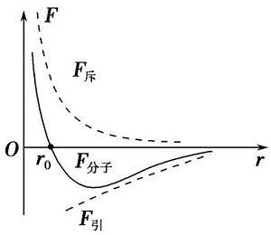
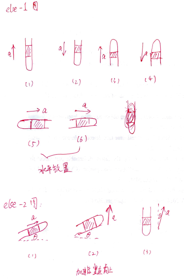
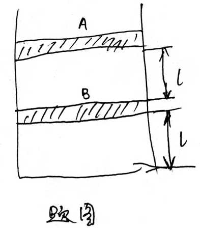
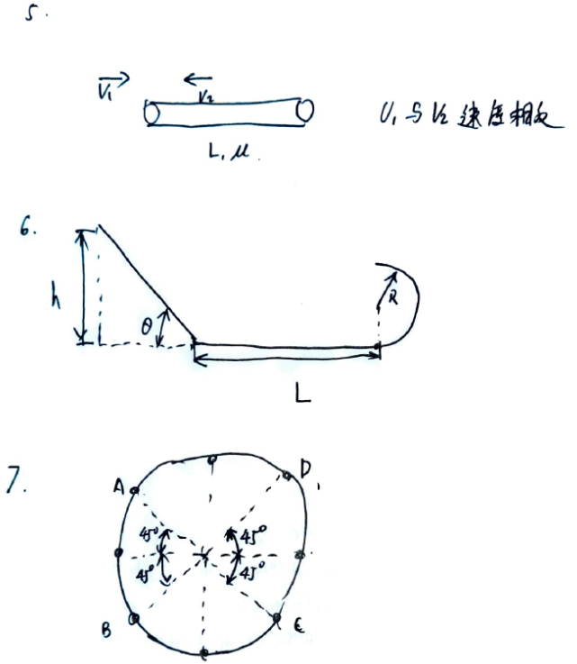
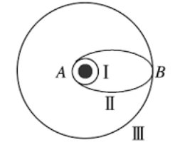
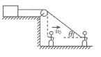
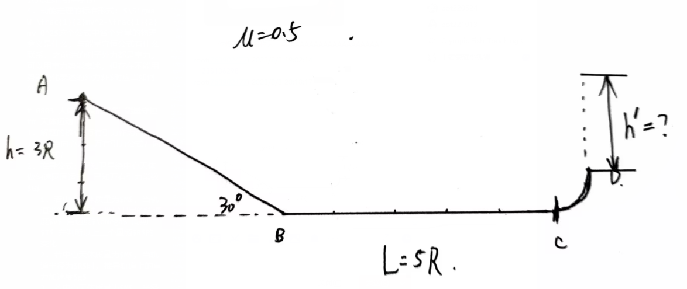
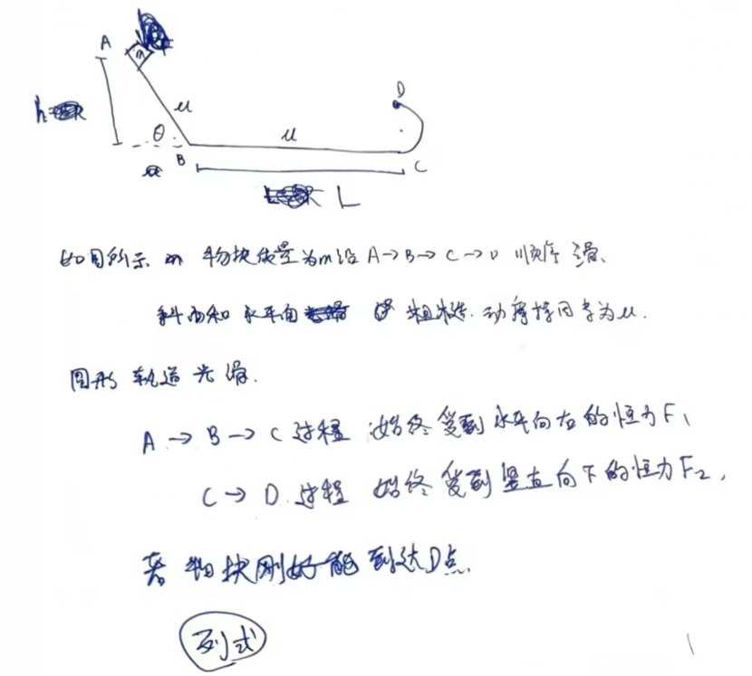
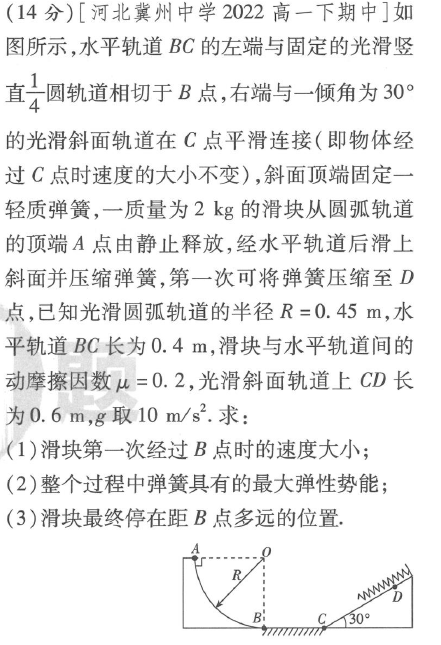

物理复习
0618 选修三分子动理论 上课内容
绪论
- 学物理有什么用
- 为了考试
- 解释生活中的现象
- 大自然运行的法则
- 理性的思维
- 如何学好物理
- 熟读课本
- 结合现实常识
- 多思考 多动笔 多总结
- 多个学科相通
- 及时复习 自己推导相关公式
- 严谨的思维
- 及时解决不会的问题
- 有效做题：做一道会一道
- 踏实做题
- 错题本
- 独立自主
分子动理论内容
- 常识： 物质由分子组成
- 物理上的分子与化学上分子、原子、离子等微粒的区别所在
- 分子的构成: 原子
- 原子的构成: 质子 中子 原子核 他们的电性? 如何记忆? 原子不带电的原因?
- 常识: 分子无规则运动
- 扩散现象: 举例 煤炭 铅块 墨水 为什么鸡尾酒不扩散 生产半导体高温掺入(为什么高温)
- 布朗运动: 足够小微粒: 花粉 炭粒 做无规则运动剧烈程度影响因素: 微粒大小(为什么?) 温度
(举例? 夏天冬天的垃圾) 分子热运动的引出 - 布朗运动观察到的不是分子,为什么能表征微观上的分子? 判别相关说法正误 布朗运动引起了人们研究兴趣,分析了一通,得到分子无规则运动
- 热运动: 为什么是这个名字
- 分子间作用力
- 常识: 注射器压缩与拉开 固体 液体// 水与酒精混合,体积减少//分子之间有间隙
- 从化学角度解释为什么 气体分子间距大 22.4L/mol 水 0.018L/mol 显而易见
- 分子间作用力:
- 如何感受 拉伸,压缩物体 注射器拉伸与压缩
- 与万有引力的不同
- 产生原因 (结合化学 范德华力)
- 分子间作用力曲线: 正方向的定义 大小增减原因 引力斥力分别如何变化的
- 不能反映气体分子
- 总结 分子动理论包括以上三条
分子运动速率
- 假想气体分子运动状态: 匀速直线运动
- 分子之间,容器壁撞击使得杂乱无章
- 大量气体分子 使得假想各个方向数量相等
- 不同温度的速率分布曲线
- 定义分子平均速率(分子平均动能)
- 气体压强产生原理:
- 分子的弹性碰撞 频繁 连续
- 压力&面积 压强&平均速率速度&分子数密度
分子能量
- 分子动能:
- 分子平均速度->分子平均动能的定义
- 分子平均动能只与温度有关,相同温度的不同气体(不同质量的气体分子)有相同的平均分子动能
- 推得 分子平均速度
- 宏观运动不改变分子动能
- 分子势能:
- 相互作用力曲线与势能之间的关系
- 宏观上与体积有关
- 内能
- 两者之和
- 具体情况具体分析
实验: 油酸测量分子直径
- 基本思想
- 单层排列
- 数格子
- 分子紧密排列
- 为什么用酒精稀释?
水面上的油 - 计算方法: 理解
- 数量级 1E-10 m: 分子直径和分子间距
0618 复习
- 什么是布朗运动？
- 布朗运动是怎样产生的？
- 布朗运动反映了谁的运动？
- 追踪一粒炭粒，每隔一段时间记下它们的位置，用折线分别依次连接这些点，折线是否为炭粒的运动径迹？是否为水分子的运动径迹？
- 布朗运动的快慢与哪些因素有关？
- 什么是热运动剧烈程度的标志
- 布朗运动, 扩散的区别
- 分子动理论内容
- 判断图像


0627 选修三 上课内容
本节课研究内容
- 温度 温标
- 什么是温标
- 如何定义绝对零度 摄氏温度
- 为什么定义开氏温度
- 摄氏温度和开氏温度的换算
- 字母表示 国际单位制
- 热平衡状态
- 压强的理解
- 什么是标准大气压
- 气压与真空环境
- 气压单位
- 气压 水压 电压
- 气压与压力与容器形状
- 本章研究内容
- 气体 变化规律(比较难 且有计算题)
- 固体物理性质
- 液体物理性质
气体
- 气体状态参量的引出 常识举例 明确什么不变 什么变化,怎么变化 正相关还是负相关
- 热胀冷缩(自由环境 等圧変化)
- 注射器外加载荷(等温变化)
- 高压锅(等容变化)
- 得出气体状态参量PVT
- 等质量气体状态规律
- 等温变化 玻意耳定律 PV常数
- 等压变化 盖-吕萨克定律 V=CT
- 等容变化 查理定律 P=CT
- 理想气体状态方程
- 什么是理想气体
- 状态方程 PV=CT
- 题目1 图像的理解
- 如何用横纵坐标两个参量表示三个参量的关系
- 曲线关键点的物理意义
- PV曲线 与 p 1/v 等温曲线
- …
- 题目2 细管内压强问题
- 受力分析
- 考虑大气压的作用
- 考虑重力的作用
- 水银柱重力的处理
固体
- 晶体 非晶体 各向同性 各向异性 铁 玻璃 水晶
- 各项异性的物理性质表现 光电热等等
- 单晶体 多晶体
- 金属为多晶体 糖块为多晶体
- 单晶体也可以很大(体积) 单晶硅
- 同种化学物质在晶体 非晶体 相互转化 石英与水晶(石英玻璃 非晶体)
液体
- 存在表面张力
- 常识 水滴表面圆形 水放满不会流 空间站的水滴球形
- 表面张力的微观解释
- 浸润现象 不浸润现象
- 应用
- 毛细现象与水面弯曲方向
- 液晶: 一类物质
0626 选修三前三章总结
- 布朗运动 是？的运动 扩散是？的运动
- 布朗运动 剧烈程度受？影响
- 扩散 剧烈程度受？影响
- 画图 分子间作用力曲线？
- 画图 分子间势能曲线
- 以上两个图适用于（固体/气体/液体）?
- 微观解释气体压强受？影响
- 分子平均动能受？影响
- 内能包括？理想气体没有分子势能，所以气体的内能只包含？结合上一条，气体内能只取决于温度
- 理想气体状态方程？
- 气体状态变化的图像问题 标注出其中的等温线 等压线 等容线？
- p-v
- p-1/v
- p-T
- V-T
- 晶体分为？
- 写出 单晶体 多晶体 非晶体 具有各向同性 还是 各向异性
- 晶体和非晶体之间的显著区别是？
- 液体与气体接触面称为？层 研究的是表面张力问题，表面张力方向？
- 液体与固体接触面称为？层 研究的是浸润和不浸润的问题。分别写出附着层内分子间距变大还是变小？表现的是引力还是斥力？
- 毛细现象：浸润和不浸润现象时，液面高于水面还是低于水面？
- 内能的变化只能通过？和？实现
- 大气压强为，计算如图所示的U型管内被封闭的气体压强？
- 大气压强为，计算如图所示的气缸内被封闭的气体压强?
- 大气压强为，计算如图所示、以一定加速度运动的U型管内被封闭的气体压强？
- 将的油酸溶于酒精，制成的油酸酒精溶液。已知的溶液有50滴，一滴滴到水面上，酒精溶于水，油酸形成单分子层，其面积为。求油酸分子直径？
0702 上课内容
热力学定律与能量守恒定律
-
能量守恒定律
- 能量不会凭空增加， 不会凭空消失 只会从一种形式转化成为另一种形式 或从一个物体转移到另一个物体。在转化和转移的过程中 能量的总量保持不变
- 第一类永动机不可能实现
-
热力学定律
- 第一定律
- 改变物体内能的两种方式 做功 热传递
- 热力学系统内能的增量等于外界向他传递的热量和外界对他做功的总和
- 符号表达 正负号
- 第二定律
- 卡劳修斯 热量不能自发从低温物体转移到高温物体
- 开尔文 不可能从单一热库吸收能量，使之完全变成功，而不产生其他影响 或 第二类永动机是不可能的
- 熵的解释 孤立系统的总熵不会减少
- 微观 一切自发过程总是沿着分子热运动无序性增大的方向进行
- 第一定律
原子结构和波粒二象性
- 黑体 黑体辐射 能量子 普朗克常数
- 微观世界与宏观世界最显著的差异 量子化 连续化
- 能量子公式
- 普朗克常量 数值 单位
- 光电效应
- 带负电的锌板 受到紫外线照射之后 所带的负电荷减少
- 光电效应：光使金属中的电子逸出 逸出的电子成为光电子
- 光电效应 性质
- 截止频率 入射光的频率太小没有光电子逸出
- 饱和电流 电压增大 电流增幅逐渐减小； 光频率越高 饱和电流越大； 同种光 光强越大饱和电流越大
- 遏止电压 光电子有一定的初速度 计算公式
- 瞬时性
- 光电效应的原理
- 逸出功 电子脱离金属材料的能量
- 光由光子组成 爱因斯坦 光有能量子组成 称为光子 计算公式
- 计算公式
- 最大初动能
- 截止频率
- 遏制电压
- 康普顿效应 光子有动量
- 光具有波粒二象性
0702 复习
受力分析初步
- 基本力包括 重力 弹力 摩擦力
- 弹力可以由 绳子 杆 弹簧 物体之间的相互接触 产生, 其中相互接触分为 面面接触 点面接触 点点接触 分别写出受力方向?
- 摩擦力
- 分为 静摩擦力 滑动摩擦力两种. 什么时候受静摩擦力? 什么时候受滑动摩擦力? 如何判断摩擦力的方向?
- 若最大静摩擦力等于滑动摩擦力, 斜面上的物体保持平衡状态时 临界状态时 加速沿斜面下滑时 摩擦力大小? 临界状态时 斜面上物体的运动情况?
- 使用 斜面上物体 不受重力的拖布模型 说明临界状态时与为何相等
- 力的合成:
- 遵循的是矢量的合成, 画出将若干分力依次收尾相连, 得到最终合力的示意图?
- 两个力的合成 画出三角形法则示意图? 平行四边形法则示意图
- 力的分解: 正交分解法
- 坐标轴方向的选择: 一般某坐标轴方向一定受力平衡. 例如斜面上的物体一定沿斜面法向方向平衡, 所以要斜着建系
- 何为正交? 为何建立的坐标系两轴之间是垂直关系?
- 力的平衡:
- 合力为0,则称受力平衡
- 在某一个方向上合力为0, 则称在这个方向上受力平衡
- 牛顿第二定律
- 合外力=
- 某个方向的合外力=乘这个方向的加速度
光电效应
- 光是由光子构成的, 光子具有能量 光子能量的计算公式? 与频率和波长的关系?
- 光电效应的基本原理: 光子的能量使金属中的电子干了什么? 由此得到什么公式? 公式中的物理量叫什么名字?
- 分析为何存在遏止电压? 由此写出计算公式?
- 分析为何存在截止频率? 由此写出计算公式?
- 最大初动能-频率图像中 横坐标交点的含义? 与纵坐标交点的含义? 斜率的含义?
- 遏止电压-频率图像中 横坐标交点的含义? 斜率的含义?
- 康普顿效应 说明光子有动量 计算公式?
- 光电效应和康普顿效应都说明光由光子组成, 说明光具有粒子性
- 什么是波粒二象性?
else
- 如图,如何使用超重和失重的思想直接写出管内气压? 用受力分析的方法与先前的结果对比,验证是否正确?
- 如图, 使用受力分析的方法计算管内气体压强? 能总结出什么结论?

0716
如图所示,AB两活塞质量均为,横截面积为封闭了两段气体,长度均为,并保持稳定.大气压强为并满足,气缸导热,环境温度为.
- 现将的砝码放置在A上面,求B活塞的位置变化.
- 在第一问的情况下,若气缸绝热,只改变下方气体的温度使A活塞恢复原来位置,求变化后的温度.

0722
- 能量主要包括 动能 势能 热能, 势能主要包括 重力势能 弹性势能.
- 弹簧或橡皮筋的弹性势能计算公式是什么, 是怎么得出的? 重力势能的增减与重力势能做正功或者做负功有什么联系, 从而弹性势能变化和弹力做功的关系如何? 弹簧和橡皮筋有何差异? 提示:什么是胡克定律? 类比是如何得到的? 图像曲线与横轴围成的面积的物理意义如何判断? 使用微元的思想解释如何得到上述两个公式?根据上述知识, 判断热学中曲线与横坐标围成的面积的物理意义?是否也可用微元法解释?
- 动能是什么 动量是什么 势能是什么 向心力公式, 线速度 角速度之间的关系是如何推导的
- 相互接触的物体相互摩擦产生热量, 产生热量的大小公式是什么? 公式中相对位移指的是什么?
- 如图所示, 物块以初速度滑上长度为, 以速度匀速运动的, 摩擦因数为的传送带:
- 当与速度方向相反时, 若物块能到达传送带另一端, 至少为,求解.当时求解相对位移,
当时求解相对位移, 其中传送带对物块所做功为物块产生的热量, 大小为? 物块对传送带所做的功为传送带产生的热量, 大小为? 两个加起来是产生的总热量(上述加粗部分表述不严谨, 仅供理解使用) - 当与速度方向相同时, 存在共速情况(下次再说)
物块一定能到达传送带另一端, 若到达另一端时已经与传送带共速, 至少为,求解.当时求解相对位移,当时求解相对位移
- 当与速度方向相反时, 若物块能到达传送带另一端, 至少为,求解.当时求解相对位移,
- 如图所示,小球从竖直方向高度为的斜轨道静止滑下,经过水平轨道滑上半圆形轨道,轨道半径为.运动过程不计一切能量损失.
- 从处滚下,求解在圆轨道最高点的压力, 假设水平轨道足够长, 求解落到水平轨道时的水平位移
- 从处滚下,假设只有水平轨道粗糙,摩擦因数为, 水平轨道长度为, 小球刚好能到圆形轨道最高点, 求
- 从处滚下,假设只有左侧斜面轨道粗糙,摩擦因数为, 左侧斜面与水平方向夹角为, 小球刚好能到圆形轨道最高点, 求满足的关系式(可能算不出具体的数, 用三角函数表示即可). 提示: 推导斜面上摩擦产生热量大小为何只与水平方向长度有关?
- 若最高点受压力为,求; 若最低点受压力为,求
- 如图所示的竖直放置的光滑圆形封闭轨道, 只受重力作用的小球能在其中做完整的圆周运动,
- 求解最高点 最低点 压力差
- 假设小球运动到最高点,最低点,最左点,最右点,ABCD点的 速度都为, 画出这8个点的受力分析示意图, 求解所受轨道的压力,切向加速度, 使用切向加速度方向判断各点处于加速还是减速. 提示: 重力正交分解为向心方向和切向方向, 向心方向的重力与支持力的合力充当向心力.

0801 能量守恒 圆周运动
- 分别使用能量的思想和力学的思想分析圆周运动的加速或减速
- 求解某一点速度时,一般使用能量守恒(动能定理) 当求解圆周轨道受力时, 使用合外力等于向心力. 列式时一定要明确研究的是哪一段运动过程. 题目问受力时,需要注明方向 需要
特别关注是轨道对小球的压力 还是 小球对轨道的压力 - 功的定义? 当力与运动方向存在夹角时, 功的大小是什么? 公式中各个物理意义是什么, 这个公式是如何推导的?
- 动能定理的标准形式: 这个公式中各个分量的物理意义是什么, 与能量守恒公式有什么联系. 之前讲的例子外力都是重力,可以用重力势能表述, 但存在不能用势能变化表述的外力时应当如何列式?
0803 天体(1) 速度的分解 能量守恒
天体运动
- 解题的核心 万有引力作为合外力, 充当向心力. 万有引力公式? 向心力公式?
- 推导公式: 已知卫星绕中心天体做匀速圆周运动, 已知万有引力常数
- 若中心天体质量为, 当轨道半径为时, 推导卫星的线速度 角速度 周期 并判断以上三个量随的变化
- 若中心天体质量为, 当轨道半径为时, 推导轨道上的重力加速度
- 若中心天体质量为, 半径为, 天体表面重力加速度为, 推导天体密度
- 若中心天体质量为, 半径为, 轨道半径为, 周期为, 推导天体密度. 当在表面运动时, 公式变成什么
- 变轨问题 如图所示卫星从轨道1->轨道2->轨道3:
- 分析整个运动过程
- 判断各个轨道的机械能, 动能, 重力势能的变化规律, 并比较大小
- 轨道1,2,3的轨道周期大小如何比较

- 什么是第一宇宙速度 计算公式是什么
- 什么是同步轨道
速度的分解
如图所示的人以匀速拉绳子, 求解物体运动的速度,已知绳子与水平方向的夹角为

能量守恒
如图所示,物块从竖直方向高度为的斜轨道静止滑下, 轨道与水平方向夹角,经过长度为的水平轨道滑上的光滑圆形轨道,轨道半径为. 在整个运动过程中始终受到水平向右的恒定拉力作用, 拉力大小, 当物块到达D点后撤去
- 求解到达D点且未撤去时,轨道对物块的压力
- 求解从D点冲出轨道后上升的高度
- 冲出后落回轨道, 沿DCBA运动, 求解物块停下时距离C点的水平距离.

0805 天体(2)
- 椭圆轨道 近地点 远地点 速度如何分析
- 天体运动解题特点 列出所有等式, 进行两个等式除法操作
- 非均匀物体万有引力求解思路
- 地面下万有引力公式 地面上万有引力公式对比
能量守恒列式练习

0807 天体(3)
- 开普勒定律 面积速度定律(定性)
- 中心天体在椭圆轨道的一个焦点上
- 面积速度定律
- 轨道半长轴-周期公式 会用万有引力公式推导
- 双星问题公式推导
- 万有引力的作用效果: 万有引力的两个分力, 一个提供了重力 一个充当了向心力
- 在赤道上 两极点上 的受力分析 重力加速度如何变化
- 在纬度时,画出受力分析简图
能量守恒练习题

All articles in this blog are licensed under CC BY-NC-SA 4.0 unless stating additionally.